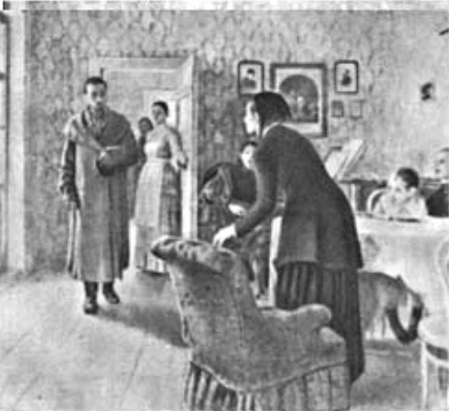
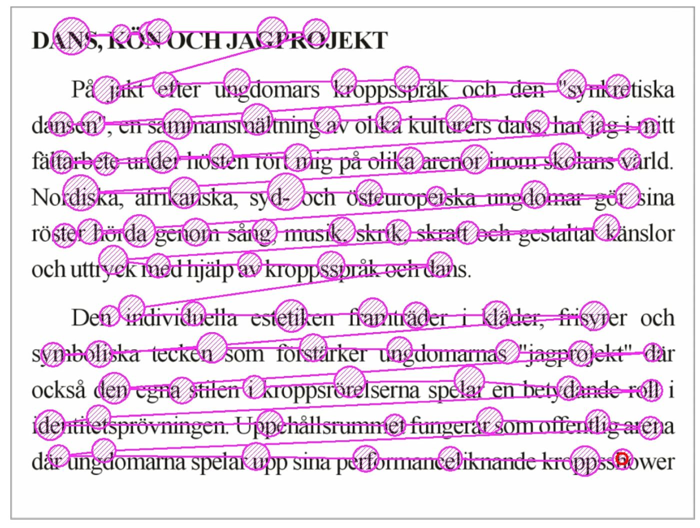
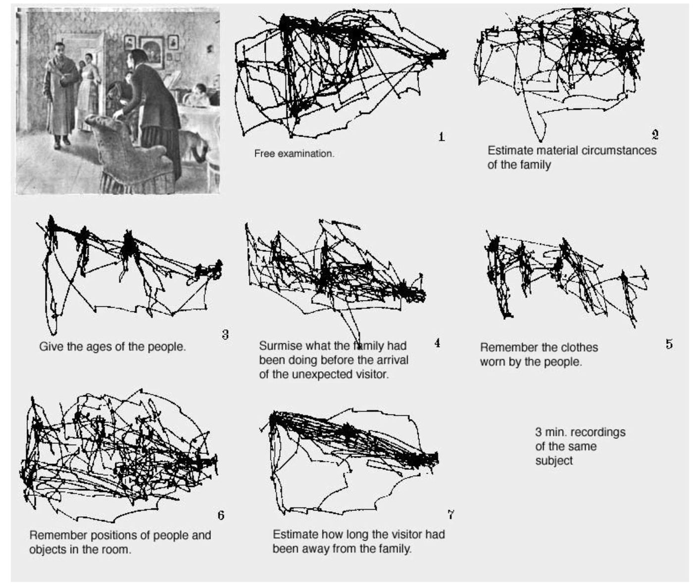

Where the eyes go: how people scan text and scenes
Your vision feels like a sharp, complete picture of the world. It isn't. Only a tiny patch at the centre of gaze is sharp, so the eyes have to jump from place to place three or four times a second to build up the picture. Where those jumps land depends on what you are looking at and on what you are trying to find out. This page uses two classic eye-tracking recordings, one of a person reading and one of a person viewing a painting, to show what gaze reveals about the visual system and how it relates to attention.
A sharp centre and a blurry surround
The retina is not uniform. Cone photoreceptors are packed most densely in the fovea, a pit about 1.5 mm across at the centre of the retina, and their density falls steeply away from it. The visual cortex amplifies this imbalance further. A disproportionate share of primary visual cortex (V1) is given to the central few degrees, a property called cortical magnification. The result is that fine detail can be seen only where you are pointing your eyes.
The eyes therefore alternate between two states:
- Fixations (≈ 200–350 ms). The eye is held almost still and visual information is taken in. Even during a fixation the eye is not perfectly still: tiny drifts, tremor and microsaccades keep the image from fading.
- Saccades (≈ 20–50 ms). Fast, ballistic jumps that move the fovea to a new target. Vision is largely suppressed while the eye is moving (saccadic suppression). That is why you never see the world smear, and why you cannot see your own eyes move in a mirror.
Because a saccade takes around 150–200 ms to plan and launch, the brain has to choose the next target before it has seen that location in detail. It uses blurry peripheral information plus whatever it already knows and wants. Choosing where to look next is the central problem the rest of this page is about.
Try it: see the painting through a fovea
The panel below shows the painting used in the Yarbus experiment (section 4). Everything outside a small window is blurred, roughly as it would be in your periphery. Move your pointer or finger over it and notice how you start choosing targets: faces first, then hands and objects.

Reading is a sequence of jumps, not a smooth glide
Most readers feel their eyes sweep smoothly along each line. In 1879 the French ophthalmologist Louis Émile Javal watched readers' eyes and saw that they actually move in a series of short jumps. The recording below shows the same thing. Each circle is a fixation, each straight line between circles is a saccade, and circle size usually encodes how long the fixation lasted.

What this one recording shows
- Fixations land on words, not on every letter. Each line of about 55–60 characters gets roughly 7–10 fixations, so a typical forward saccade spans about 6–9 characters.Rayner's (1998) review puts the average saccade in reading at 7–9 letter spaces. Saccade length scales with letters, not with visual angle: if you hold the page closer, saccades get bigger in degrees but stay about the same in letters.
- Short words are often skipped. On the first line "och den" (and the) gets no fixation, and many instances of "i", "på", "av" are passed over.Content words are fixated about 85% of the time and short function words only about 35% of the time. A skipped word is still read. It was identified in the parafovea during the previous fixation.
- Long words get two fixations. "kroppsspråk", "synkretiska", "sammansmältning" and "identitetsprövningen" each receive two or more fixations.Long compound words, which are common in Swedish, do not fit in a single foveal "glimpse". The first fixation tends to land a little left of the word's centre (the preferred viewing location), and a refixation picks up the rest.
- Fixations differ in length. The circles vary in size.How long a word is fixated depends on how easy it is to process. Rarer words, less predictable words and longer words get longer fixations (frequency, predictability and length effects). Eye movements give a moment-by-moment record of language processing, which is why psycholinguists use them.
- The line edges are never fixated. The first fixation on a line lands a few letters in, and the last one lands several letters before the end. On the first line the indented word "På" is not fixated at all.The first and last few letters are read from the parafovea, so fixating them would waste a saccade. Return sweeps often undershoot, and a small corrective saccade follows. You can see this at the start of the lines beginning "dansen'" and "identitetsprövningen".
- Not every saccade moves forward. There is a leftward jump in the heading, and there are a few short backward saccades within lines.About 10–15% of saccades in skilled reading are regressions. They happen when a word was misread, when the sentence turns out to be ambiguous, or when the eye overshot its target. Regressions are more frequent with difficult text and with less skilled readers.
How much can a reader see in one fixation?
McConkie and Rayner (1975) answered this with the moving-window paradigm. An eye-tracker updates the screen in real time so that only a window of normal text around the point of fixation is shown, and every letter outside it is replaced with x. If the window is large enough, readers do not notice and read at normal speed. Shrink it and reading slows down. The smallest window that still allows normal reading is the perceptual span.
How the span was measured
The basic logic: if hiding some letters does not change how a person reads, those letters were not being used. To hide letters only where the reader is not looking, the display has to follow the eyes.
- Track the eyes. The reader sits with the head held steady, often on a chin rest or bite bar, while an eye-tracker samples gaze position hundreds to thousands of times a second.Early studies such as McConkie and Rayner's used a computer connected to an eye-tracker. Modern systems such as the EyeLink sample at 1000 Hz or more, and display changes take only a few milliseconds.
- Change the screen during each saccade. Whenever the eye starts to move, the computer redraws the line so that normal text appears only around the new landing point.Because vision is suppressed during a saccade, the swap is invisible. Readers usually do not notice that most of the line is x's, even though it changes every quarter of a second.
- Vary the window. Across trials the window is made larger or smaller, and moved left or right of fixation. The material outside it is also varied: x's, look-alike letters, or random letters, with the spaces kept or filled in.Comparing these replacements shows what kind of information is used at each distance. If keeping the spaces matters far out, then word length is being used there. If look-alike letters help, then letter shape is being used.
- Measure reading, not opinions. The outcome measures are reading speed, fixation durations, saccade lengths and the number of regressions.The span is the smallest window at which all these measures match reading with no window at all. For English that is about 3–4 letters to the left and 14–15 to the right (McConkie & Rayner, 1975, 1976; Rayner, 1998).
Two companion experiments
The reverse of the window: the letters at fixation are masked and the periphery is left intact. With a 7-letter foveal mask, reading becomes almost impossible. The parafovea can support reading but cannot replace the fovea.
A single target word is replaced by a "preview" until the eyes cross an invisible boundary just before it. A correct preview shortens the later fixation on that word by roughly 20–50 ms. This is the preview benefit: proof that the next word is already being processed.
Try it yourself
The demo below is a pointer-driven version of the same idea. Your pointer stands in for your gaze.
Move along a line from left to right, as if you were reading it. With the 4 + 14 window, reading feels almost normal. With the mirrored window, the same 18 letters suddenly give much less help. Turn off Keep spaces and word boundaries disappear, which disrupts where you would aim your next saccade.
The span is lopsided, which tells us it is attention and not acuity
For readers of English the perceptual span runs from about 3–4 letters to the left of fixation to about 14–15 letters to the right (McConkie & Rayner, 1976). Acuity on the retina is symmetric, so the asymmetry cannot come from the eye. It comes from where the reader is attending, which is the direction they are about to read. The left edge is closer to "the start of the word being fixated" than to a fixed number of letters: text already read is no longer needed.
What changes the size of the span
| Factor | What happens to the span | Source |
|---|---|---|
| Writing direction | Hebrew is read right to left, and the span flips: it extends further to the left. The same bilingual reader shifts the asymmetry when switching between English and Hebrew. | Pollatsek et al., 1981 |
| Information density of the script | The denser each character, the fewer characters in the span. Chinese: about 1 character left and 2–3 right. Japanese mixed kanji–kana text: about 6 characters right. In terms of information the spans are more alike than the character counts suggest. | Inhoff & Liu, 1998; Ikeda & Saida, 1978 |
| Reading skill | Beginning readers have a smaller span (about 11 letters right in early primary school) that grows with practice. Readers with dyslexia have also been reported to show smaller spans. | Rayner, 1986; Häikiö et al., 2009 |
| Age | Older adult readers show a smaller and more symmetric span than young adults, consistent with less attention to spare for the upcoming text. | Rayner et al., 2009 |
| Difficulty of the fixated word | When the word being fixated is hard (rare, long or unexpected), the span to the right shrinks and preview benefit drops. Attention is busy at the fovea and does not get far ahead. This is called "foveal load". | Henderson & Ferreira, 1990 |
| Lines above and below | The span is essentially restricted to the line being read. Readers get little or no useful information from the line below. | Pollatsek et al., 1993 |
Three spans inside the span
"Perceptual span" is the outer limit. Inside it, different kinds of information reach different distances (Rayner, Well, Pollatsek & Bertera, 1982; Rayner, 1998):
- Word-identification span, about 7–8 letters to the right. Words are actually recognised here. Usually this covers the fixated word and, if it is short, the next word. This is where skipping decisions come from.
- Letter-identity span, about 8–10 letters to the right. Partial information, such as the first letters of the next word, is picked up and speeds its later recognition.
- Word-length span, out to about 14–15 letters. Only the spaces are useful here. They tell the eye where the next word starts and how long it is, which sets the landing point of the next saccade.
Same picture, different question, different scanpath
In the 1960s the Russian psychologist Alfred Yarbus recorded eye movements with a small mirror attached to the eye by a suction cap. In his best-known experiment one observer looked at Ilya Repin's painting Unexpected Visitors (also known as They Did Not Expect Him). The observer viewed it seven times, three minutes each time, and each time was given a different question.

Reading the seven traces
| # | Instruction | Where the gaze went |
|---|---|---|
| 1 | Free examination | Heavy clustering on the faces across the top band of the picture, especially the visitor and the woman rising from the chair. Faces dominate even when no task asks for them. |
| 2 | Estimate the family's material circumstances | Gaze spreads to the furniture, walls, pictures and clothing. Most of the picture gets sampled, with a concentration on the right half, where the room's contents are. |
| 3 | Give the ages of the people | Tight, isolated knots on each face with fast jumps between them. Almost nothing else is looked at. |
| 4 | What had the family been doing before the visitor arrived? | The trace runs between people and the objects near them, such as the table, chairs and piano, as if checking the activity around each person. |
| 5 | Remember the clothes worn | Vertical strokes running down each figure from head to feet, unlike the face-only knots of trace 3. |
| 6 | Remember positions of people and objects | The widest coverage of all seven: gaze roams the whole canvas, including the floor and empty space, to build a spatial map. |
| 7 | How long had the visitor been away? | A dense back-and-forth between the visitor's face and the family's faces. The answer lies in their expressions: surprise, recognition, uncertainty. |
Yarbus's conclusion still shapes vision science: eye movements reflect the human thought processes behind them. The same image, with the same pixels and the same salient edges, produces systematically different gaze depending on what the viewer is trying to find out. The visual system does not passively record a scene. It actively queries it.
What else we know about looking at scenes
- The gist comes first. A single glance of about 100 ms is enough to tell a beach from a kitchen and to pick out its layout (Potter, 1976; Oliva & Torralba, 2006). That first glance guides where the first saccades go.
- People, faces and text attract fixations strongly, and almost regardless of task (Cerf et al., 2009). Trace 1 shows this.
- Centre bias. Viewers look at the middle of an image more than at its edges, whatever the image shows (Tatler, 2007). This is partly a photographer's habit and partly a good strategy.
- Meaning beats brightness. When "meaning maps" (crowd-rated regions of informative content) compete with low-level image salience, meaning predicts fixations better (Henderson & Hayes, 2017).
- Scanpaths repeat, partly. Noton and Stark (1971) found that viewers tend to replay similar fixation sequences when they see an image again, but the sequences vary a lot from person to person.
Reading versus scene viewing in numbers
| Task | Mean fixation | Mean saccade size | What mainly drives the next saccade |
|---|---|---|---|
| Silent reading | 225–250 ms | ≈ 2° (8–9 letters) | Word recognition, word length and spaces, linguistic difficulty |
| Oral reading | 275–325 ms | ≈ 1.5° (6–7 letters) | As above, held back by the slower speaking voice |
| Visual search | 180–275 ms | ≈ 3° | Target features: colour, shape, expected location |
| Scene perception | 260–330 ms | ≈ 4° | Gist, meaning, faces, task goals, some low-level salience |
Values from Rayner (1998), Table 1. They vary considerably with text difficulty, image content and individual viewer.
Gaze is attention you can see, but not all attention moves the eyes
Both recordings above are, at heart, records of attention: the brain's way of selecting a small part of the incoming information for detailed processing. The visual system cannot fully process everything in the visual field at once. The fovea is the hardware form of that limit, and attention is the software form.
Pointing the eyes (and often the head) at something. This is what eye-trackers measure, and it is what the circles and traces in both figures show.
Attending to a location without moving the eyes, like noticing someone across the room "out of the corner of your eye". Posner (1980) showed that a cue at a location speeds up responses there even when the eyes stay still.
The two are tightly linked. Just before each saccade, covert attention shifts to the saccade target, and perception at that location improves (Deubel & Schneider, 1996; Kowler et al., 1995). The premotor theory of attention (Rizzolatti et al., 1987) goes further: it claims that shifting attention is preparing an eye movement that may or may not be carried out. Reading gives the clearest everyday example. The perceptual span's rightward reach and the preview benefit (section 3) are covert attention moving on to the next word while the eyes are still fixated on the current one.
What decides where attention goes next?
Three more facts about attention that eye-tracking revealed
- Inhibition of return. After attention leaves a location, it is briefly slower to come back to it (Posner & Cohen, 1984). This pushes search towards new places, which is why scanpaths do not keep revisiting the same spot.
- Looking is not seeing. In inattentional blindness, about half of viewers counting basketball passes fail to notice a person in a gorilla suit walking through the scene (Simons & Chabris, 1999). In change blindness, large changes go unnoticed across a brief interruption (Rensink, O'Regan & Clark, 1997). Gaze can rest on something that attention never fully processes.
- Features are bound by attention. Treisman's feature integration theory (Treisman & Gelade, 1980) holds that simple features such as colour and orientation are registered in parallel across the visual field, while combining them into an object takes focused attention. The lab below lets you test this on yourself.
Pop-out versus serial search
Find and click the orange circle as fast as you can. In feature search it is the only orange item, so it differs by a single feature. In conjunction search there are also orange squares and blue circles, so the target is defined only by the combination of colour and shape. The lab runs 24 trials with 6, 12 or 24 items per display and plots your average time against the number of items.
24 short trials take about a minute. Keep your pointer near the centre between trials.
| Items | 6 | 12 | 24 | Slope |
|---|---|---|---|---|
| Feature | – | – | – | – |
| Conjunction | – | – | – | – |
What to expect: feature-search times stay roughly flat as items are added (slope near 0 ms per item), because the target "pops out" in parallel. Conjunction-search times usually rise with set size, classically by 20–30 ms per item when the target is present, because attention has to visit items until it binds the right colour to the right shape. Your times also include moving the mouse, which adds a roughly constant amount. Errors (clicks on the wrong item) are counted but not timed.
"Attention" in neural networks: borrowed name, different mechanism
Ideas from human gaze have repeatedly fed into computer vision and machine learning, and "attention" is now a core building block of modern AI. It helps to be precise about what carries over and what does not.
- Saliency models predict where people will look. The Itti–Koch model (1998) combines contrast in colour, intensity and orientation. Deep models such as DeepGaze learn the mapping from eye-tracking datasets and are compared on public benchmarks such as MIT/Tübingen Saliency.
- Glimpse models copy the fovea directly. The Recurrent Attention Model (Mnih et al., 2014) looks at a few small high-resolution patches of an image in sequence, and learns where to look next with reinforcement learning, much as a saccade policy would.
- Soft attention in image captioning (Xu et al., 2015, "Show, Attend and Tell") produces a weighting over image regions at each generated word. These heat-maps look strikingly like fixation maps.
- Self-attention in Transformers (Vaswani et al., 2017) lets every token weight every other token. This is the version people usually mean by "attention" today.
- Do models attend where humans look? Often not. Das et al. (2016) collected human attention maps for visual question answering and found that the regions models weighted correlated only weakly with where humans looked. Researchers also use human gaze as a training signal, for example reading-time data in NLP and gaze-guided image models.
| Human gaze & attention | Transformer self-attention | |
|---|---|---|
| Why it exists | A hard limit: only a 2° fovea and limited processing capacity | A modelling choice: lets the network route information by content |
| How many places at once | One fixation at a time, plus a limited covert spotlight | All positions in parallel, with every query attending to every key |
| Cost of looking | Each saccade costs about 200 ms of planning, and vision is suppressed during it | No per-glance cost; compute grows as n² with sequence length |
| Order in time | Sequential: a scanpath through space over time | Within one layer, no sequence of glances; the weights are computed at once |
| Driven by | Salience, meaning and task goals together | Learned query–key similarity, shaped only by the training objective |
| Is the map an explanation? | Fixations reflect processing, but looking ≠ understanding (inattentional blindness) | Attention weights are not reliable explanations of a prediction (Jain & Wallace, 2019) |
One practical payoff runs the other way. Because the periphery sees so little detail, VR headsets with eye-tracking use foveated rendering: they draw full detail only where the user is looking and save a large share of GPU work, much as the demo in section 1 blurs everything but the window.
What gaze tells us about the human visual system
Vision is sampled, not continuous
We see in a series of 200–300 ms snapshots linked by saccades. The smooth, detailed world we experience is built by the brain from those snapshots.
Detail is expensive, so it is rationed
A tiny high-resolution fovea plus mobile eyes is cheaper than high resolution everywhere. Choosing where to look is how the system spends its budget.
Reading is tuned to language
Where and how long the eyes stop tracks word length, frequency and predictability. The perceptual span is lopsided in the reading direction, which is a direct signature of attention.
The task steers the eyes
Yarbus showed that the same image yields different scanpaths for different questions. Vision works as goal-directed questioning of a scene, not as passive recording.
Attention leads, eyes follow
Covert attention shifts to the next target before each saccade. Reading preview and pre-saccadic enhancement show that the eyes carry out decisions attention has already made.
Fixating is not the same as perceiving
Inattentional and change blindness show that gaze location is a useful but imperfect index of what is actually processed. The same caution applies to attention maps in neural networks.
- Javal, L.É. (1879). Essai sur la physiologie de la lecture. Annales d'Oculistique, 82, 242–253.
- Huey, E.B. (1908). The Psychology and Pedagogy of Reading. Macmillan.
- Buswell, G.T. (1935). How People Look at Pictures. University of Chicago Press.
- Yarbus, A.L. (1967). Eye Movements and Vision. Plenum Press. (Russian original 1965.)
- Noton, D. & Stark, L. (1971). Scanpaths in eye movements during pattern perception. Science, 171, 308–311.
- McConkie, G.W. & Rayner, K. (1975). The span of the effective stimulus during a fixation in reading. Perception & Psychophysics, 17, 578–586.
- McConkie, G.W. & Rayner, K. (1976). Asymmetry of the perceptual span in reading. Bulletin of the Psychonomic Society, 8, 365–368.
- Ikeda, M. & Saida, S. (1978). Span of recognition in reading. Vision Research, 18, 83–88.
- Rayner, K. & Bertera, J.H. (1979). Reading without a fovea. Science, 206, 468–469.
- Rayner, K., Well, A.D., Pollatsek, A. & Bertera, J.H. (1982). The availability of useful information to the right of fixation in reading. Perception & Psychophysics, 31, 537–550.
- Rayner, K. (1986). Eye movements and the perceptual span in beginning and skilled readers. J. Exp. Child Psychology, 41, 211–236.
- Henderson, J.M. & Ferreira, F. (1990). Effects of foveal processing difficulty on the perceptual span in reading. J. Exp. Psychology: LMC, 16, 417–429.
- Pollatsek, A., Raney, G.E., LaGasse, L. & Rayner, K. (1993). The use of information below fixation in reading and in visual search. Canadian J. Exp. Psychology, 47, 179–200.
- Häikiö, T., Bertram, R., Hyönä, J. & Niemi, P. (2009). Development of the letter identity span in reading. J. Exp. Child Psychology, 102, 167–181.
- Rayner, K., Castelhano, M.S. & Yang, J. (2009). Eye movements and the perceptual span in older and younger readers. Psychology and Aging, 24, 755–760.
- Rayner, K. (1975). The perceptual span and peripheral cues in reading. Cognitive Psychology, 7, 65–81.
- Potter, M.C. (1976). Short-term conceptual memory for pictures. J. Exp. Psychology: Human Learning and Memory, 2, 509–522.
- Treisman, A. & Gelade, G. (1980). A feature-integration theory of attention. Cognitive Psychology, 12, 97–136.
- Posner, M.I. (1980). Orienting of attention. Quarterly Journal of Experimental Psychology, 32, 3–25.
- Pollatsek, A., Bolozky, S., Well, A.D. & Rayner, K. (1981). Asymmetries in the perceptual span for Israeli readers. Brain and Language, 14, 174–180.
- Posner, M.I. & Cohen, Y. (1984). Components of visual orienting. In Attention and Performance X, 531–556.
- Koch, C. & Ullman, S. (1985). Shifts in selective visual attention. Human Neurobiology, 4, 219–227.
- Rizzolatti, G., Riggio, L., Dascola, I. & Umiltà, C. (1987). Reorienting attention across the horizontal and vertical meridians. Neuropsychologia, 25, 31–40.
- Wolfe, J.M. (1994). Guided Search 2.0. Psychonomic Bulletin & Review, 1, 202–238.
- Desimone, R. & Duncan, J. (1995). Neural mechanisms of selective visual attention. Annual Review of Neuroscience, 18, 193–222.
- Kowler, E., Anderson, E., Dosher, B. & Blaser, E. (1995). The role of attention in the programming of saccades. Vision Research, 35, 1897–1916.
- Deubel, H. & Schneider, W.X. (1996). Saccade target selection and object recognition. Vision Research, 36, 1827–1837.
- Rensink, R.A., O'Regan, J.K. & Clark, J.J. (1997). To see or not to see. Psychological Science, 8, 368–373.
- Itti, L., Koch, C. & Niebur, E. (1998). A model of saliency-based visual attention. IEEE TPAMI, 20, 1254–1259.
- Rayner, K. (1998). Eye movements in reading and information processing: 20 years of research. Psychological Bulletin, 124, 372–422.
- Reichle, E.D., Pollatsek, A., Fisher, D.L. & Rayner, K. (1998). Toward a model of eye movement control in reading. Psychological Review, 105, 125–157.
- Inhoff, A.W. & Liu, W. (1998). The perceptual span and oculomotor activity during the reading of Chinese sentences. J. Exp. Psychology: HPP, 24, 20–34.
- Simons, D.J. & Chabris, C.F. (1999). Gorillas in our midst. Perception, 28, 1059–1074.
- Engbert, R., Nuthmann, A., Richter, E.M. & Kliegl, R. (2005). SWIFT: A dynamical model of saccade generation during reading. Psychological Review, 112, 777–813.
- Oliva, A. & Torralba, A. (2006). Building the gist of a scene. Progress in Brain Research, 155, 23–36.
- Tatler, B.W. (2007). The central fixation bias in scene viewing. Journal of Vision, 7(14):4.
- Rayner, K. (2009). Eye movements and attention in reading, scene perception, and visual search. QJEP, 62, 1457–1506.
- DeAngelus, M. & Pelz, J.B. (2009). Top-down control of eye movements: Yarbus revisited. Visual Cognition, 17, 790–811.
- Cerf, M., Frady, E.P. & Koch, C. (2009). Faces and text attract gaze independent of the task. Journal of Vision, 9(12):10.
- Greene, M.R., Liu, T. & Wolfe, J.M. (2012). Reconsidering Yarbus. Vision Research, 62, 1–8.
- Borji, A. & Itti, L. (2014). Defending Yarbus: Eye movements reveal observers' task. Journal of Vision, 14(3):29.
- Mnih, V., Heess, N., Graves, A. & Kavukcuoglu, K. (2014). Recurrent models of visual attention. NeurIPS.
- Xu, K. et al. (2015). Show, attend and tell. ICML.
- Das, A., Agrawal, H., Zitnick, C.L., Parikh, D. & Batra, D. (2016). Human attention in visual question answering. EMNLP.
- Vaswani, A. et al. (2017). Attention is all you need. NeurIPS.
- Henderson, J.M. & Hayes, T.R. (2017). Meaning-based guidance of attention in scenes. Nature Human Behaviour, 1, 743–747.
- Jain, S. & Wallace, B.C. (2019). Attention is not explanation. NAACL.